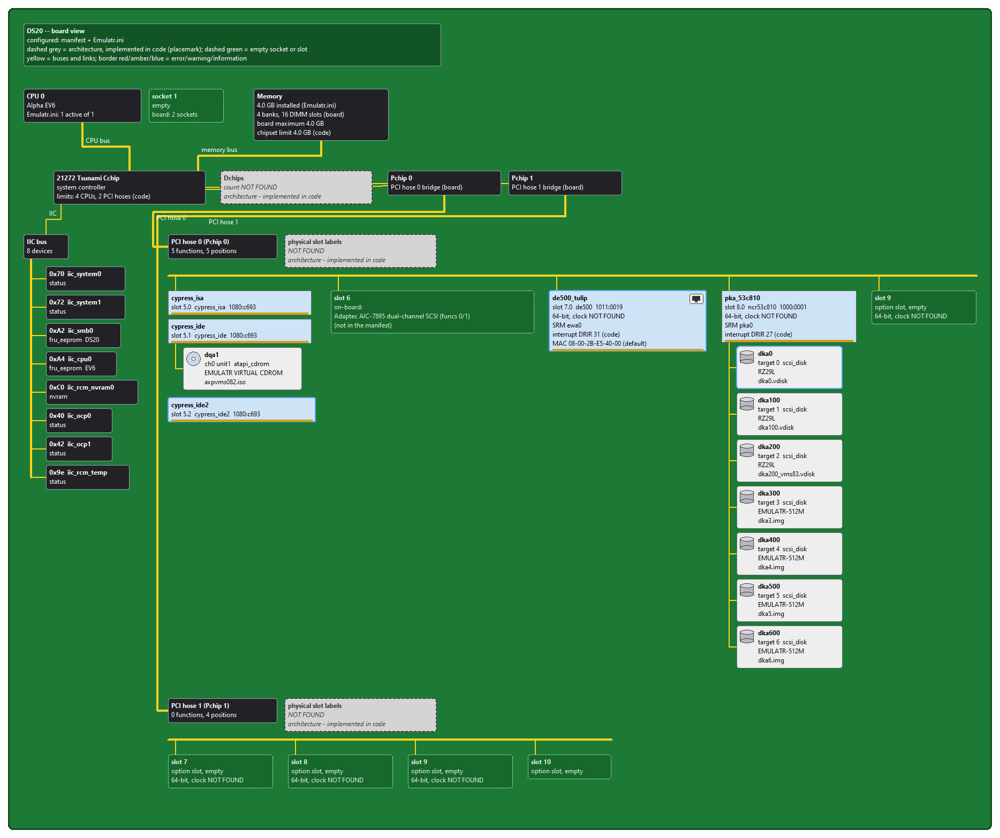
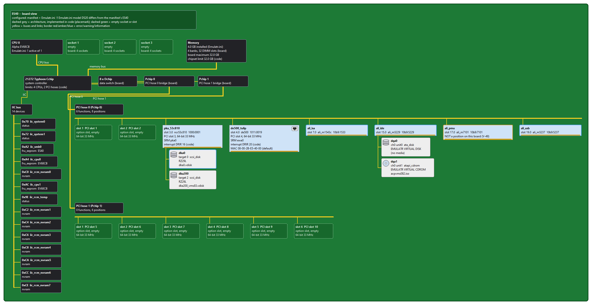
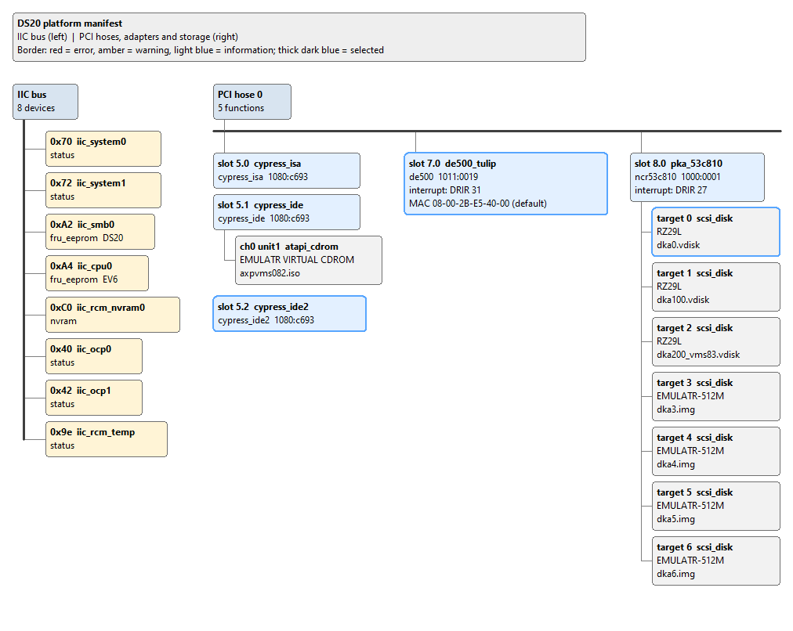

|
<< Click to Display Table of Contents >> Navigation: 3. Platform Editor > The Platform Editor Window |
The title bar shows EMulatR Platform Editor - <file name>, with * after the name while there are unsaved changes.
Pane |
Contents |
|---|---|
Manifests (left) |
The .json files of the folder chosen with File > Open Folder.... Click one to open it. |
Tree / Diagram (centre) |
Two tabs. Tree: the manifest's structure: IIC devices, PCI devices and each controller's storage. A row is coloured by the worst finding that names it: red for an error, amber for a warning, blue for information. Hover for a tooltip. Diagram: the same manifest drawn as a board or a bus diagram (see View, below). |
Properties (right) |
The selected item's name in bold, its path in the file (for example $.pci_devices[3].storage[0]), and one editable row per field. |
Issues (bottom) |
Every finding, with Severity, Id and Message. Selecting a finding selects the item it concerns. |
Status bar |
The result of the last action, and why an entry was rejected. |
Menu |
Command |
Shortcut |
Action |
|---|---|---|---|
File |
Open... |
Ctrl+O |
Open a manifest (*_platform.json). |
File |
Open Folder... |
Ctrl+Shift+O |
List a folder's manifests in the Manifests pane. |
File |
Reload |
F5 |
Re-read the file from disk, discarding unsaved changes (asks first). |
File |
Save |
Ctrl+S |
Save; the previous file is kept as <name>.bak. |
File |
Save As... |
Ctrl+Shift+S |
Save under a new name. |
File |
Export Diagram... |
Ctrl+E |
Save the current diagram view as a PNG image (default name <manifest>_diagram.png). |
File |
Quit |
Ctrl+Q |
Close (asks first if there are unsaved changes). |
Edit |
Undo Configure |
Ctrl+Z |
Take back the last Configure wizard change. Available until any other edit. |
View |
Tree |
Ctrl+1 |
Show the tree. |
View |
Board Diagram |
Ctrl+2 |
Show the board view (below). |
View |
Bus Diagram |
Ctrl+3 |
Show the plain bus diagram. |
Tools |
Configure... |
Ctrl+K |
Start the Configure wizard. |
Tools |
Validate |
Ctrl+L |
Re-run all checks (they also run after every change). |
Help |
About |
Version and credits. |
Button |
Available when |
Action |
|---|---|---|
Open... / Save |
always / a manifest is open |
As File > Open... and File > Save. |
+ IIC |
a manifest is open |
Add an IIC device row. |
+ PCI |
a manifest is open |
Add a PCI device row (model generic). |
+ BAR |
a PCI device is selected |
Add a base address register to it. |
+ Device |
an IDE or SCSI controller is selected |
Menu: Virtual Disk, Virtual CD-ROM, Virtual Tape (not yet supported -- shown disabled), Physical CD-ROM (host). The emulator does not yet attach host drives, so a host CD-ROM row is skipped at start-up. |
Duplicate |
an item in a list is selected |
Copy the item after itself; its name gains _copy. |
Delete |
an item in a list is selected |
Remove the item (asks first). |
Configure... |
a manifest is open |
Start the Configure wizard. |
The Diagram tab draws the open manifest as a picture. View > Board Diagram (Ctrl+2, the default) shows it as a system board; View > Bus Diagram (Ctrl+3) shows a plain bus diagram of the same devices; View > Tree (Ctrl+1) returns to the tree. Click a box to select that item: the tree follows and the Properties pane shows its fields. Selecting in the tree highlights the box. The picture redraws after every change, and File > Export Diagram... saves the current view as a PNG.
Source |
Parts of the drawing |
|---|---|
The manifest |
IIC devices; PCI cards by slot and function with model and vendor:device; disks and CD-ROMs with drive model and image; the network MAC. |
Emulatr.ini |
The CPUs (one block per active CPU) and the memory size, from [System] activeCpus, cpuCount and memorySize. The editor reads the ini beside the manifest, else the run directory's config/Emulatr.ini; if it finds none, the drawing says so. |
EMulatR's code |
The chipset block (for example 21272 Tsunami, with its CPU and PCI hose limits), each controller's interrupt line, and the SRM console names: pka0 and dka0, dka100... on the SCSI controller, dqa0/dqa1/dqb0/dqb1 on IDE, ewa0 for the network controller. |
The board description |
EMulatR's built-in description of each board (chipsetLib/BoardDescription.h), taken from the hardware manuals with a citation for every value: the CPU sockets (empty ones drawn as dashed green outlines), the Dchips and Pchips (each Pchip feeding its own PCI hose), the memory banks and DIMM slots with the board maximum, and every PCI position on every hose, with its printed slot label, width and clock where the manuals give them. Empty option slots and on-board positions the manifest leaves empty are drawn as dashed green outlines. Available for the DS10, DS20 and ES40. |
Placemark (dashed grey) |
A board fact that no manual in the reference library states, for example the DS20's Dchip count or the DS10's CPU sockets and memory banks. Each is labelled "NOT FOUND" and "architecture - implemented in code", and becomes a real part when a source is found. |
Yellow lines are buses and links: the CPU bus, the memory bus, the IIC bus and each PCI hose. Cards show a gold edge connector; drives, CD-ROMs and the network port have icons. A box's border shows the worst finding on it: red for an error, amber for a warning, blue for information.

The board view also warns when the ini's installed memory exceeds the board maximum, when the ini's model differs from the manifest's platform, and when a device sits at a position the board does not have (V-49).

The bus view draws the same devices without the board: the IIC bus on the left and each PCI hose with its slots on the right.

Each field is edited with a control chosen by schema/platform_schema.json. The field's type is shown in the help line under the grid.
Type |
Control |
Rule |
|---|---|---|
int |
Number box |
Whole number, within the schema's minimum and maximum. |
hex |
Text |
Must be written 0x...; anything else is rejected and the status bar says why. |
enum |
Drop-down |
One of the listed values. |
openEnum |
Drop-down you can type into |
Suggested values, or your own. |
bool |
Check box |
true / false. |
path |
Text with a browse button |
A file name; .vdisk, .img and .iso are offered. |
multiline |
Text area |
Comments. |
free / size / passthrough |
Text |
Kept as typed. |
A field shown in amber differs from the device catalog's value for that model; the help line shows the catalog value. Read-only fields (for example manifest_version) cannot be changed.
See Also.